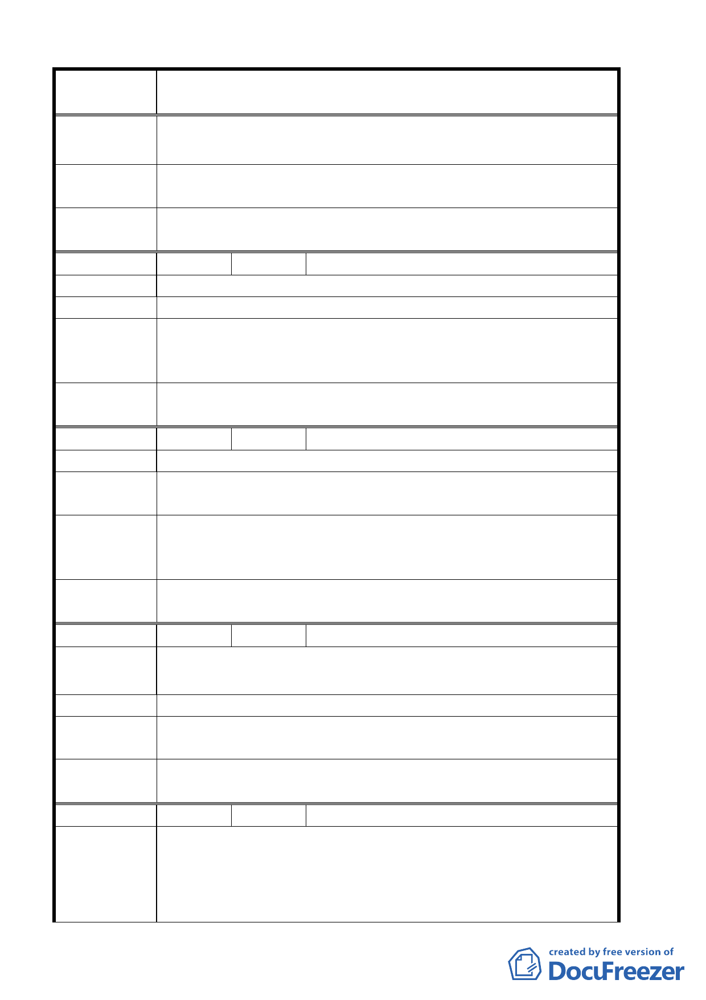

案 名 臺北市北投區都市計畫通盤檢討案（主要計畫）案
積為 41 ㎡、地號 512 面積為 58 ㎡,共計 126 ㎡),與﹃面
積欄﹄所列之 110 ㎡不符，敬請 貴局研議後修正。
專 案小組 審 93.4.29 專案小組第四次審查會議：同意配合查明更正面積及
查 結 論 修正名稱。
委員會議
決議
同意依專案小組審查結論辦理。
編 號 １０ 陳情人 楊昭枝
陳 情 理 由 各捷運站都有商業區開放，獨缺忠義捷運站。
建 議 辦 法 開放忠義捷運站之商業區。
專案小組審
查結論
93.6.10 專案小組第五次審查會議：該地區變更部分土地為住
三（特）已滿足提供鄰里型商業使用之需求，同意依公展計畫
辦理。惟請發展局再了解陳情人對變更為商業區需回饋之意願。
委員會議
決議
同意依專案小組審查結論辦理。
編 號 １１ 陳情人 賴達昌
陳 情 理 由 台北市民需要新鮮氧氣，及在森林裏活動。
建議辦法
將關渡平原農業區，洲美農業區、運動公園減少人為設施，大
量種植樹木改為森林區。
專案小組審
結論
93.6.10 專案小組第五次審查會議：依發展局於專案小組報告
及討論，關渡平原未納入本次通盤檢討範圍，相關建議留供發
展局參考。
委員會議
決議
同意依專案小組審查結論辦理。
編 號 １２ 陳情人 張晉碩
陳 情 理 由 一、土地標示：振興三小段 1052 地號
建議理由：促進社區繁榮
建 議 辦 法 變更為商業區。
擬 建議處 理 94.3.3 專案小組第 11 次審查會議：因不符檢討原則，建議維
意 見 持原都市計畫案。
委員會議
決議
同意依專案小組審查結論辦理。
編 號 １３ 陳情人 國立台北藝術大學
一、主要計畫內所附土地使用分區圖中，位於本校校地北隅鄰
陳情理由
近光武技術學院校區之本校所有「學校用地」，圖例誤標繪
為「保護區」，請惠予更正。（如附件一）。
二、由於本校位置並未鄰接該區域之主要道路中央北路，而係
第 11 頁，共 49 頁